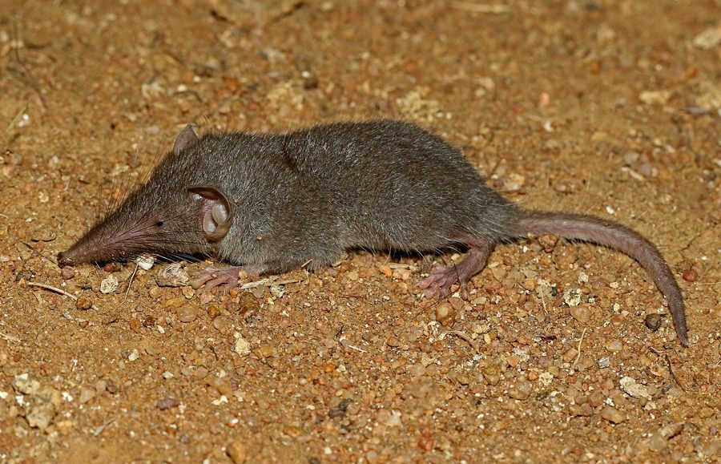

छछूंदरAsian House Shrew
Suncus murinus · Soricidae · MAM-0015

- Scientific name
- Suncus murinus (Linnaeus, 1766)
- Family
- Soricidae
- Hindi
- छछूंदर
- Status here
- native
- IUCN
- LC
When to look कब देखें
Present all year.
छछूंदर / Asian House Shrew
Suncus murinus (Linnaeus, 1766) — Soricidae
छछूंदर (एशियन हाउस श्रू) — पूर्वी उत्तर प्रदेश के घरों, बगीचों और अनाज भंडारों के कोनों में पाया जाने वाला एक अत्यंत सामान्य और निवासी कीटभक्षी (insectivore) स्तनधारी जीव है। यह एक महत्वपूर्ण पहचान बिंदु है कि छछूंदर कोई चूहा या कृतक (rodent) नहीं है, बल्कि एक पूरी तरह से अलग कीटभक्षी समूह का सदस्य है। इसकी पहचान इसके लंबे, नुकीले व लचीले थूथन (pointed snout), बहुत छोटी आँखों और लगभग बाल रहित पूँछ से होती है। यह रात के समय दीवारों के किनारों से सटकर बहुत तेज़ी से (fast, frantic dashes) भागता है और लगातार तीखी चीं-चीं जैसी आवाजें करता है। इसके शरीर के किनारों पर स्थित ग्रंथियों से एक तीखी कस्तूरी जैसी गंध (musky odour) निकलती है, जिसके कारण घरेलू बिल्लियाँ और कुत्ते इसे मार तो देते हैं लेकिन खाते नहीं हैं। यह हानिकारक कीड़ों, कॉकरोचों और चूहों के बच्चों को खाकर घरों में एक प्राकृतिक कीट नियंत्रक का कार्य करता है।
Quick Identification त्वरित पहचान
| Feature | Description |
|---|---|
| Size | Mouse-sized animal; head-body length 12–15 cm; tail length 6–8 cm; weight 50–100 g |
| Snout | Long, pointed, flexible snout (proboscis) covered with sensitive whiskers |
| Rodent status | Not a rodent; an insectivore; lacks gnawing incisors, possessing sharp needle teeth |
| Eyes | Extremely small, black, bead-like eyes with very poor vision |
| Tail | Short, thick at the base, tapering, and almost completely hairless |
| Scent | Secretes a strong, pungent, musk-like odor from glands on its flanks |
| Behaviour | Runs in frantic, rapid, straight dashes along wall bases, making high-pitched squeaks |
Field tip: Look for a mouse-sized animal running rapidly along the baseboards of walls in dark rooms at night. If it makes a high-pitched, metallic squeaking sound and has a long, pointed snout that moves constantly, it is a shrew. Observe its movement: it runs in straight lines and does not jump or climb like rats.
Morphology आकारिकी
Biometrics (typical measurements for adult specimens in local households):
| Measurement | Range |
|---|---|
| Head-body length | 12–15 cm |
| Tail length | 6–8 cm |
| Weight | 50–100 g |
Body details: The body is stout with short, delicate limbs. The snout is highly elongated, mobile, and projects far beyond the mouth, covered in tactile vibrissae (whiskers). The ears are small, flat, and rounded. The fur is short, dense, and velvety, uniformly slate-grey or brownish-grey. The tail is thick at the base, tapers quickly, and is nearly naked. The teeth are specialized for insectivory, featuring numerous sharp, pointed cusps, without the prominent chisel-like incisors of rodents. Lateral musk glands are present on the flanks of both sexes, larger and more active in males.
Behaviour & Ecology व्यवहार और पारिस्थितिकी
Wall-hugging nocturnal insectivore.
- Locomotion: Strictly terrestrial. It moves in rapid, frantic dashes, maintaining continuous contact with walls or floor corners using its snout whiskers to compensate for near-total blindness. It does not climb walls or jump.
- Scent communication: Rubs its sides against objects as it runs, depositing a trail of musky secretion that helps it navigate back to its den and advertise its territory.
- Vigilant squeaking: Emits a constant stream of high-pitched, click-like squeaks. These calls function as a form of close-range acoustic mapping in dark spaces.
Ecological Role पारिस्थितिक भूमिका
Voracious insect predator.
- Metabolic demand: Due to a exceptionally high metabolic rate, the shrew must consume its own body weight in food every 24 hours. A shrew will starve to death if deprived of food for more than a few hours.
- Domestic predator: Preys heavily on cockroaches, spiders, crickets, and nesting rodent pups, acting as a major biological house cleaner.
Life Cycle / Phenology जीवन चक्र
- Breeding: Breeds year-round, with litters peaking in post-monsoon and spring months.
- Nesting: The female builds a loose, ball-like nest of dry leaves and grass in dark, hidden corners (behind boxes or in woodpiles). Gestation lasts 30 days, resulting in a litter of 2–4 pups.
- Caravan behavior: When moving the young, the mother leads, and each pup bites the tail base of the sibling in front, forming a running chain or "caravan" to relocate safely.
Host Plants or Prey आहार
Prey:
- Large household cockroaches, crickets (such as [INS-0036 African Mole Cricket]), beetle larvae, and spiders.
- Occasionally captures and consumes newborn pink mice inside drawers.
Predators / Natural Enemies शत्रु
- Feline/Canine enemies: Domestic cats and dogs readily hunt and kill shrews due to their frantic movement, but refuse to eat them due to the foul taste of the flank musk glands.
- Natural predators: Barn Owls, Spotted Owlets (such as [BRD-0004 Spotted Owlet]), and Spectacled Cobras hunt them inside houses and gardens.
Agricultural / Human Relevance कृषि प्रासंगिकता
Harmless house helper.
- Insect control: Highly beneficial inside Basti homes, keeping cockroach and beetle populations low.
- Misidentification conflict: Often mistaken for rats and killed. Shrews do not gnaw wood, wires, or clothes, as their teeth are not adapted for gnawing, and they do no damage to household structures.
- Cultural beliefs: In local folklore, a shrew running into a room is sometimes seen as a sign of financial gain, preventing some households from harming them.
Expected Locally स्थानीय रूप से अपेक्षित
Not a field record. Written from published accounts for eastern Uttar Pradesh. No confirmed local sighting yet — if you have seen it, that is what the atlas needs.
अभी तक स्थानीय पुष्टि नहीं। यह विवरण प्रकाशित स्रोतों से है, किसी अवलोकन से नहीं।
Commonly found in all residential blocks of Basti district. Active at night in rural kitchens (rasoi), grain storage houses (galla godam), and urban drainage corners. They are highly vocal, and their metallic squeaking is a familiar household sound at night.
Distribution वितरण
Global range: Native to South Asia, East Asia, and Southeast Asia; widely introduced across the Middle East, East Africa, and Indian Ocean islands.
In India: Abundant throughout the mainland in all climatic zones.
In Uttar Pradesh: Common resident in all rural and urban settlements.
In Basti district / eastern UP: Observed commonly in all blocks.
Research Questions शोध प्रश्न
Anyone can investigate these | कोई भी इन प्रश्नों की जाँच कर सकता है
- What is the frequency of caravan behaviour in Asian House Shrew litters when disturbed in Basti homes? / बस्ती के घरों में परेशान होने पर छछूंदर के बच्चों में कारवां व्यवहार (caravan behaviour) की आवृत्ति क्या होती है? — Document occurrences and chain length of fleeing families.
- Does the presence of a resident shrew correlate with a lower density of cockroaches inside village kitchens? / क्या घर में छछूंदर की उपस्थिति का संबंध ग्रामीण रसोई के भीतर कॉकरोचों के कम घनत्व से है? — Compare insect trap catches in households with vs. without shrews.
- What is the daily food consumption rate of Suncus murinus in captivity when offered different insect prey? — Measure weight of insects consumed daily.
- How do shrews behaviorally respond to the scent of domestic cats on floor paths? — Track movement adjustments when cat scent is applied.
- Can children draw a comparative sketch showing the difference between a shrew's pointed nose and a house mouse's rounded nose? — A simple diagnostic sketching activity.
Similar Species मिलती-जुलती प्रजातियाँ
| Species | Key Difference | हिंदी |
|---|---|---|
| Rattus rattus (House Rat) | Rodent; has a rounded snout; large eyes; long, hairy tail; lacks musk glands; climbs walls | चूहा — गोल नाक, बड़ी आँखें, गंध रहित |
| Mus musculus (House Mouse) | Much smaller (under 25 g); large rounded ears; long thin tail; lacks the pointed mobile snout | चुहिया — छोटा आकार, गोल कान |
| [MAM-0013 Lesser Bandicoot Rat] (Bandicota bengalensis) | Much larger (200–500 g); coarse bristly hair; broad head with orange incisors; aggressive | घुँस — बहुत बड़ा, खुरदरे बाल, चौड़ा सिर |
Field rule: Pointed mobile snout, slate-grey velvety coat, thick hairless tail, musky odor, running in rapid straight dashes while emitting high squeaks, identify the Asian House Shrew.
Taxonomy & Classification वर्गीकरण
Original description. Carl Linnaeus described the Asian House Shrew as Sorex murinus in 1766 in Systema Naturae (Ed. 13, Vol. 1, p. 74). The type locality was Java, Indonesia. The genus name Suncus is derived from the Arabic name sunkus for shrews. The specific name murinus is Latin for "mouse-like".
Subspecies. Suncus murinus murinus is the nominate subspecies present in northern India.
Family and order placement. Placed in the order Soricomorpha (often placed in Eulipotyphla), family Soricidae (shrews), subfamily Crocidurinae.
Phylogenetic notes. Suncus murinus represents a highly successful lineage of white-toothed shrews that developed commensal relationships with humans, facilitating its dispersal along trade routes across the Old World.
IUCN status rationale. Listed as Least Concern (LC) by the IUCN due to its extremely large range, high abundance, tolerance of human-altered habitats, and absence of conservation threats.
Photo Gallery फोटो गैलरी
References संदर्भ
- Linnaeus, C. (1766). Systema Naturae per regna tria naturae, secundum classes, ordines, genera, species, cum characteribus, differentiis, synonymis, locis. Editio Decima Tertia, Reformata. Tome I, Pars 1. Holmiae: Laurentii Salvii, p. 74. [original description]
- Blanford, W. T. (1888). The Fauna of British India, including Ceylon and Burma. Mammalia. Taylor and Francis, London, p. 233.
- Prater, S. H. (1971). The Book of Indian Animals. Bombay Natural History Society, Bombay.
- Louch, C. D., et al. (1966). Activity and movements of the house shrew, Suncus murinus, in Calcutta, India. Journal of Mammalogy, 47(4), 629-641.
- ZSI Checklist — Soricomorpha of Uttar Pradesh (2012).
- IUCN SSC Small Mammal Specialist Group (2016). Suncus murinus. The IUCN Red List of Threatened Species. Version 2016-3. IUCN, Gland, Switzerland.
- GBIF Occurrence Data — Suncus murinus, Uttar Pradesh (2010–2025).
Source file: species/fauna/mammals/asian_house_shrew.md